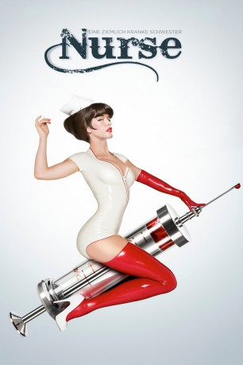
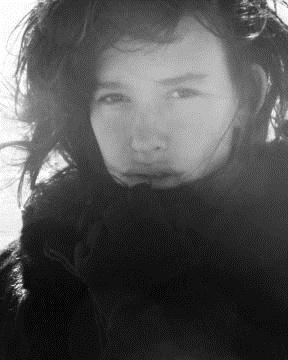
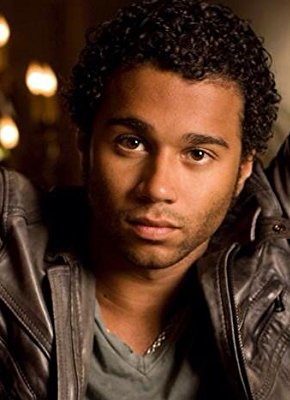

#7449 Nurse
 gesehen am 12.11.2017
gesehen am 12.11.2017
 
 IMDB-Wertung: 4.6 / 10
IMDB-Wertung: 4.6 / 10  Metascore: 0
Metascore: 0 
Als die junge Danni ihren neuen Job als Krankenschwester im All Saints Memorial Krankenhaus beginnt, freundet sie sich sofort mit der attraktiven Kollegin Abby Russell an. Abby erscheint von außen wie eine gutmütige Krankenschwester, doch sie hat ein dunkles Geheimnis: Auf ihren nächtlichen Touren durch New Yorks Bars und Clubs lockt sie untreue Männer mit Hilfe ihres verführerischen Aussehens in eine Falle, um sie anschließend zu töten. Nach einer wilden Partynacht landen Abby und Danni im Bett und Abbys anfängliche Sympathie für ihre Kollegin wird zur Besessenheit. Sie möchte um jeden Preis eine Beziehung mit ihr eingehen, doch diese weist sie zurück und ahnt nicht, dass sie damit das Leben ihres Freundes Steve und ihr eigenes riskiert.
Jahr: 2013
Dauer: 84 Minuten
FSK: 18
Land: USA Studio: LionsgateTonspuren: DTS - ,
Untertitel: Deutsch,
Auflösung: 1080p (1920x800) Größe: 5560 MB
Genre: Thriller, Horror
Regisseur: Douglas Aarniokoski
Drehbuch: Douglas Aarniokoski
Soundtrack:
Darsteller:
-  Paz de la Huerta als Abby Russell
 Katrina Bowden als Danni Rogers
Katrina Bowden als Danni Rogers Judd Nelson als Dr. Robert Morris
Judd Nelson als Dr. Robert Morris-  Corbin Bleu als Steve
 Boris Kodjoe als Detective Rogan
Boris Kodjoe als Detective Rogan Melanie Scrofano als Rachel Adams
Melanie Scrofano als Rachel Adams Niecy Nash als Regina
Niecy Nash als Regina Martin Donovan als Larry Cook
Martin Donovan als Larry Cook- Chris Hoffman als Married Man / Fred
- Brittany Adams als Young Nurse
 Kathleen Turner als Head Nurse
Kathleen Turner als Head Nurse- Jake Michaels als New Dad
- Adam Herschman als Jared
- Patrick Kwok-Choon als EMT #1
- Jeff Pangman als Dr. Robert Price
 Kjartan Hewitt als Orderly
Kjartan Hewitt als Orderly David Huband als Detective Goldberg
David Huband als Detective Goldberg Michael Eklund als Richie
Michael Eklund als Richie- Katia Peel als Young Abby, 5 years
- Joe MacLeod als EMT #2
 Layton Morrison als Truck Driver
Layton Morrison als Truck Driver Michael Therriault als Anatomy Professor
Michael Therriault als Anatomy Professor Lauro Chartrand als Security Guard
Lauro Chartrand als Security Guard- Stephan Dubeau als Doctor
- Blake Mawson als Bloody Boyfriend on Stretcher , uncredited
- Tracy Michailidis als Abby's Mom
- Elyse Mason als Pretty Young Nurse
- Linda Papadopoulos als Danni's Mom, Marcia
- Milan Carmona als Hispanic Kid
- Vanessa Lai Fox als Nurse Hansen
- Gregory Dunham als Urine Bag Patient
- Lori Pearlstein als Support Speaker
- Landy Cannon als Hawaiian Shirt Guy
- Amanda Armagon als Receptionist
- Yulia Lukin als Larry's Date , uncredited
- Marc Andrew Smith als Doctor , uncredited
Datei: X:\FSK18-2013\Nurse (2013, FSK18, 1920x800).mkv seit 10.11.2017
Festplatte: FSK18
 Es gibt insgesamt 26 Filme in der Gruppe 'FSK18-2013'
Es gibt insgesamt 26 Filme in der Gruppe 'FSK18-2013'